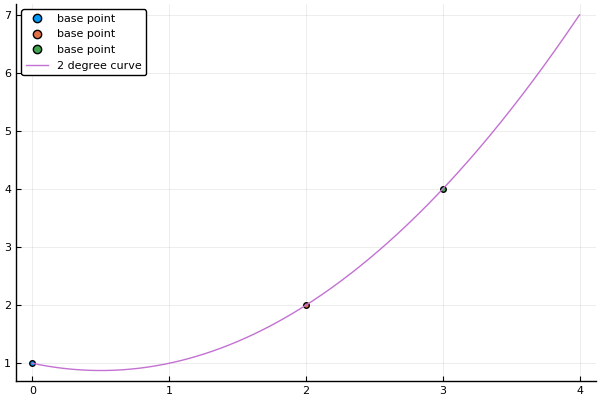
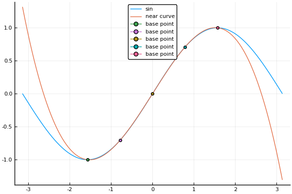

牛顿差商
霍纳法则
InterpolationPolynomial.horner_rule — Method霍纳法则
horner_rule(degree, constants, x, base_points)对多项式求值的霍纳法则(嵌套乘法)
Arguments
degree: 多项式的阶constants: degree+1个系数数组，分别是$x^0,x^1,···,x^n$项的系数x::Real: 进行求值带入的xbase_points: 每一阶的x的基点数组
Usage
julia> horner_rule(4, [-1 5 -3 3 2], 1/2, [0 0 0 0])
1.25牛顿差商
InterpolationPolynomial.newton_difference_quotient — Method牛顿差商方法
newton_difference_quotient(x, y)牛顿差商给出插值多项式的一种简单形式。给定$n$个数据点，所得到的结果多项式至多$n-1$阶
牛顿差商公式定义：
用$f[x_1 ··· x_n]$表示(唯一)多项式的下$x^{n-1}$项的系数，该多项式的插值$(x_1, f(x_1)),···,(x_n, f(x_n))$
$\begin{aligned} P(x) = & f[x_1] + f[x_1 x_2](x-x_1) + f[x_1 x_2 x_3](x-x_1)(x-x_2) \\ &+ f[x_1 x_2 x_3 x_4](x-x_1)(x-x_2)(x-x_3) \\ &+ ··· + f[x_1 ··· x_n](x-x_1)···(x-x_{n-1}) \end{aligned}$
根据唯一性，$x_1 x_2 ··· x_n$的任意置换结果相同：
$f[x_1 x_2 ··· x_n] = f[x_2 x_3 ··· x_n x_1] = f[x_2 x_3 ···x_{n-1} x_1 x_n]$
由此可推导出:
$f[x_1 ··· x_k] = \frac {f[x_2 ··· x_k] - f[x_1 ··· x_{k-1}]}{x_k - x_1}$
以及：
$\begin{aligned} f[x_k] &= f(x_k) \\ f[x_k x_{k+1}] &= \frac {f[x_{k+1}]-f[x_k]}{x_{k+1}- x_{k}} \\ f[x_k x_{k+1} ··· x_{k+j}] &= \frac {f[x_{k+1} ··· x_{k+j}]-f[x_k ··· x_{k+j-1}]}{x_{k+j}- x_{k}} \end{aligned}$
Example
julia> x = [0 2 3]
1×3 Array{Int64,2}:
0 2 3
julia> y = [1 2 4]
1×3 Array{Int64,2}:
1 2 4
julia> newton_difference_quotient(x,y)
3-element Array{Float64,1}:
1.0
0.5
0.5x_0 = [0 2 3]
y_0 = [1 2 4]
c = newton_difference_quotient(x_0, y_0)
x = 0:0.01:4
y = horner_rule(2, c, x, x_0)
p = scatter(x_0, y_0, label="base point")
plot!(p, x, y, label="2 degree curve")
使用牛顿差商在$[-\pi/2, \pi/2]$近似拟合sin函数
取$x=[-\pi/2 -\pi/4 0 \pi/4 \pi/2]$的插值
x_0 = [-pi/2 -pi/4 0 pi/4 pi/2]
y_0 = sin.(x_0)
c = newton_difference_quotient(x_0,y_0)
x = -pi:0.01:pi
y = horner_rule(length(x_0)-1, c, x, x_0)
p = plot(x, [sin.(x) y], label=["sin" "near curve"])
plot!(p, x_0, y_0, shape=:circle, label="base point")